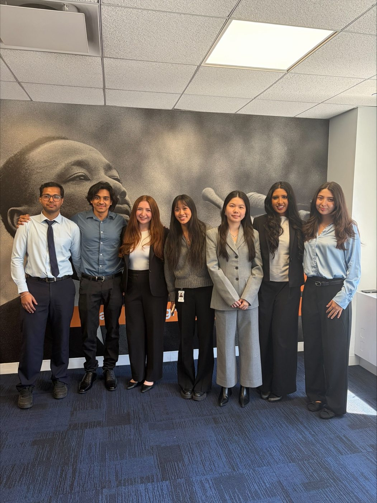
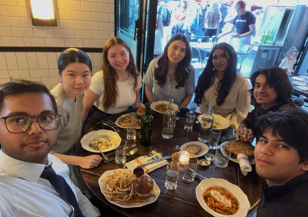
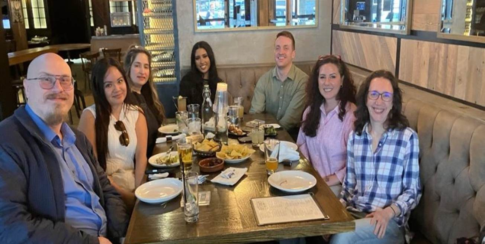
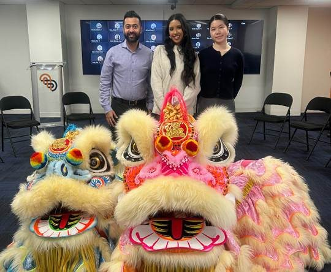
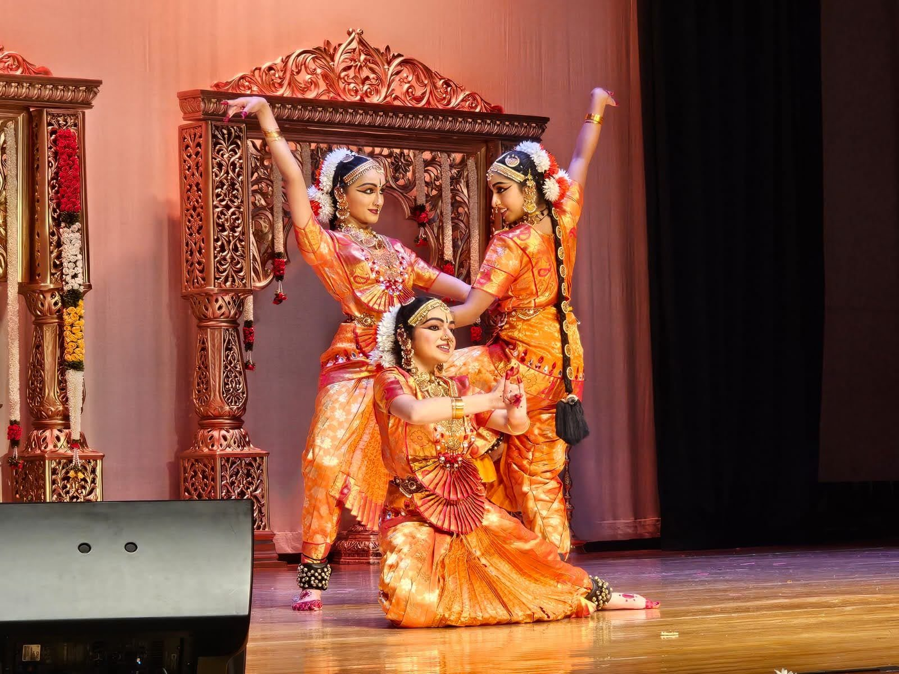
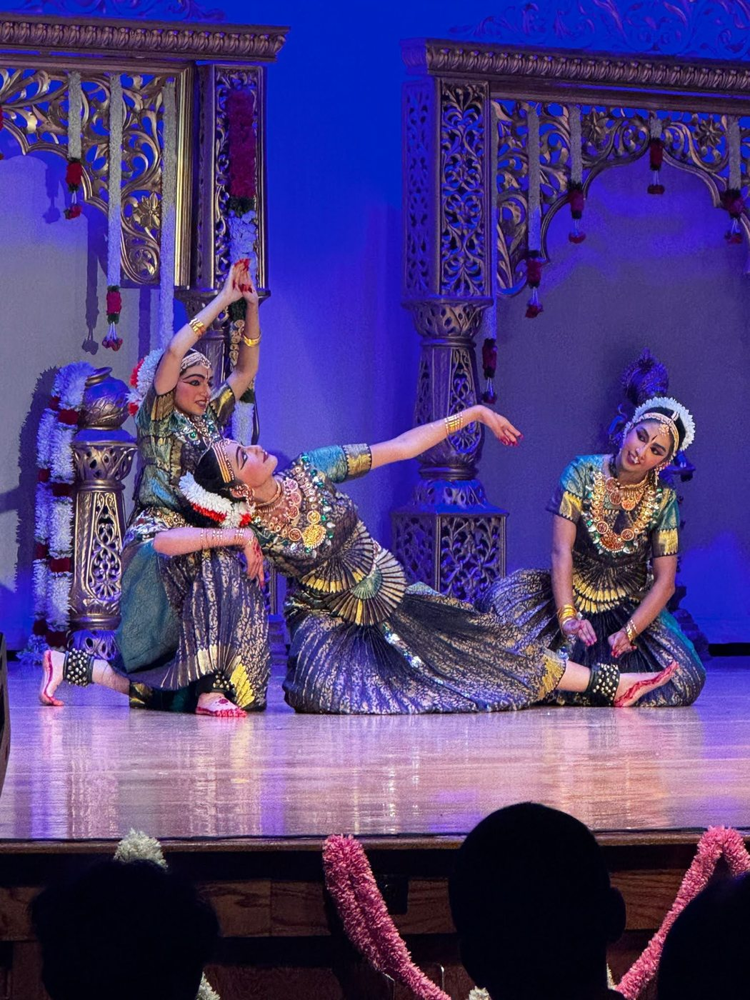
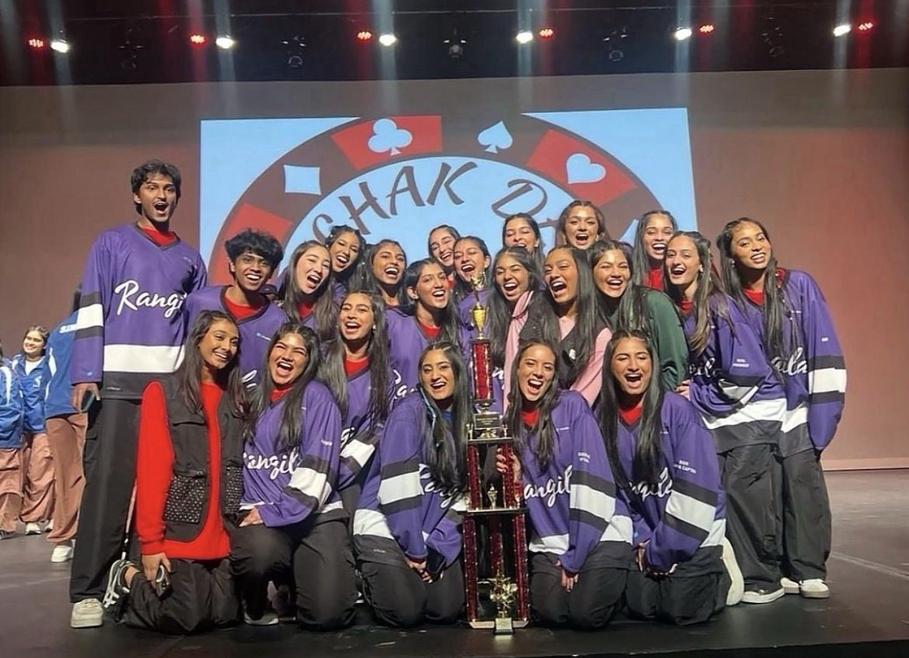

The experiences that shaped me.
From financial analytics and student-led projects to volunteering and performing, these are some of the experiences I am most proud of.
Turning data into better decisions
At Amalgamated Bank, I spent eight months as a Finance Data Analytics Co-op. I helped automate more than 16 financial and regulatory reporting workflows with Axiom Strata and SQL, created VBA tools for validating financial datasets, and had the chance to present my work to the CFO and senior leadership. One thing that stayed with me was how important it is to communicate the impact of technical improvements, not just explain the code behind them.
My previous internships
At Subway IP, LLC, I worked in finance and inventory, building weekly Excel forecasts for cash flow and inventory and analyzing expenses in QuickBooks. I maintained forecasting error below 5% and identified more than $250 in potential monthly savings. It helped me see how even small operational decisions can have a measurable financial impact.
As a Board Office Accounting Intern at Morris County Vocational School District, I processed over 80 purchase orders, monitored expenditures, and worked with tuition data from more than 10 districts for forecasting and reconciliation. I learned how much accuracy and organization matter when a budget supports an entire school community.
I also helped develop FinDrop, an AI-enabled cash flow analytics prototype designed to help small businesses spot liquidity risks and potential vendor savings. Together, these experiences deepened my interest in combining finance with data analytics.




Making time to give back
Through the American Red Cross, I served as Chapter Secretary and Events Coordinator. I helped organize blood drives, trivia night fundraisers, disaster preparedness kit projects, and letters to veterans. Our fundraising events brought in over $9,000 per event for humanitarian initiatives. I also completed EDGE training in Disaster Preparedness and Inclusivity. Volunteering has been a way to meet people and work on something much bigger than any one person's responsibilities.
I'm also proud of co-founding the Lumiere Foundation, where we organized career-focused workshops for students in grades 7 through 12 who had limited access to career and technical education. Community work reminds me that leadership is often about being dependable, listening carefully, and following through on the details.
American Red Cross initiatives
50+students reachedLumiere Foundation workshops
How my experiences connect
My interests aren't divided into neat boxes. This D3 bar chart shows how five selected experiences connect to different themes in my life. Click or hover over a bar to find out which experiences are included. The categories are my own qualitative tags, not a rating of skill or impact.
Source: five examples from my resume and activities. Some experiences appear under more than one theme.
Thirteen years of dance, and counting
I've trained in three Indian classical dance styles: Bharatanatyam, known for precise movements and expressive storytelling; Kuchipudi, which combines dramatic expression with dynamic footwork; and Mohiniyattam, a graceful dance tradition from Kerala. One of my proudest milestones was completing my arangetram, a formal debut recital that marks a dancer's readiness to perform independently after years of intensive training. Preparing for it taught me discipline, patience, and the value of putting something meaningful onstage.
Now, I'm on Rangila, Northeastern's South Asian fusion dance team. We combine dance styles, represent Northeastern, and travel across the country to compete. I love how different it is from working in finance, but it still calls for preparation, teamwork, and learning quickly from mistakes. It's easily one of the most exciting parts of my college experience.


